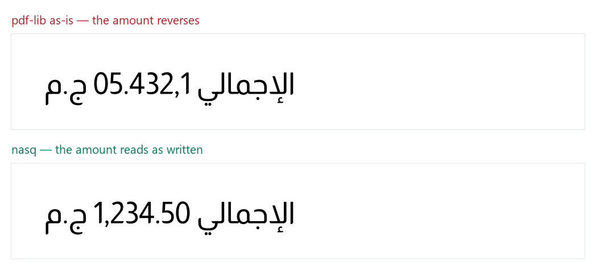

هل تصل المبالغ إلى فاتورتك كما كُتبت؟
مقياسٌ مفتوح يبني ملفات PDF فعلية ويقرأ منها الرسوم — لا يفحص ما تُعيده الدوال. 12 حالة، كلٌّ تحمل قاعدةً مسمّاة من خوارزمية يونيكود الثنائية الاتجاه (UAX #9).
السطر نفسه، والخطّ نفسه، ومحرّكان:

هذه صورةٌ مُصيَّرة من ملفَي PDF فعليين، لا نصّ في الصفحة —
لأن المتصفّح عارضٌ مطابق لخوارزمية يونيكود، فلو وُضعت السلسلة المكسورة
نصّاً لأعاد ترتيبها فأصلحها بصرياً، وضاعت البرهنة.
ولّدها evidence.py من الملفات نفسها.
والعيب ليس في تشكيل الحروف — تلك صحيحة في الاثنين — بل في ترتيب المقاطع الاتجاهية.
اللوحة
| المحرّك | النتيجة |
|---|---|
| نَسْق (محرّكنا) يقطع السطر إلى مقاطع اتجاهية بـUAX #9 ويرسم كلاً في موضعه. bidi-js اجتازت 91,707 حالة من سلسلة يونيكود. |
12/12 100%
|
| bidi-shaper → pdf-lib تُخرج سلسلةً بصرية صحيحة، ثم تُمرَّر إلى drawText. تُقاس هنا في هذا التركيب بعينه. |
2/12 16.7%
|
| pdf-lib (كما هي) المكتبة الأشهر لتوليد PDF في جافاسكربت — 5.5 ألف نجمة. تُشكّل العربية صحيحةً عبر fontkit، ولا تطبّق خوارزمية الاتجاه. |
0/12 0%
|
| naqqash + مُهايئها لـpdf-lib تُصرّح في صفحتها الأولى أنها لا تطبّق الخوارزمية الثنائية الاتجاه. تُقاس هنا على الفاتورة، لا على نطاقها المُعلَن — والفرق مذكور. |
0/12 0%
|
إنصافٌ واجب
naqqash تُصرّح في صفحتها الأولى أنها لا تطبّق
الخوارزمية الثنائية الاتجاه، وتُحيل إلى bidi-js. فالنتيجة أعلاه
ليست اتهاماً لها بمخالفة ما تَعِد به — بل بيانٌ لما يكلّفه ذلك الحدُّ
المُعلَن حين تكون على الورق فاتورةٌ فيها مبلغ. والأمر نفسه في
bidi-shaper: تُخرج سلسلةً صحيحة، ثم تعكسها مكتبةُ الرسم بعدها
— فالمقياس على التركيب لا على الحزمة وحدها.
الحالات، حالةً حالة
| النصّ | القاعدة | يجب أن يظهر والخطّ الذي جرت به |
نَسْق | bidi-shaper | pdf-lib | naqqash |
|---|---|---|---|---|---|---|
الإجمالي 1,234.50 ج.مأشهر عيب يصل العميل: المبلغ مقلوباً على فاتورته. |
B1 | 1,234.50Almarai |
✓ | ✗ | ✗ | ✗ |
المبلغ 9,876.54 |
B2 | 9,876.54Almarai |
✓ | ✗ | ✗ | ✗ |
الباقي 15 جنيهاً |
B1 | 15Almarai |
✓ | ✗ | ✗ | ✗ |
شركة ABC للتجارة |
B3 | ABCAlmarai |
✓ | ✗ | ✗ | ✗ |
الفاتورة رقم INV-2026/001رقم الفاتورة معرّفٌ قانوني — انعكاسه يجعل المستند غير قابل للمطابقة. |
B3 | INV-2026/001Almarai |
✓ | ✓ | ✗ | ✗ |
الرقم الضريبي: 310122393500003 |
B1 | 310122393500003Almarai |
✓ | ✗ | ✗ | ✗ |
بتاريخ 2026/09/01 |
B5 | 2026/09/01Almarai |
✓ | ✗ | ✗ | ✗ |
ضريبة القيمة المضافة (15%)بلا عزل تتفرّق «%» و«)» عن الرقم. |
B7 | (15%)Almarai |
✓ | ✗ | ✗ | ✗ |
الإجمالي 1,571.75 SARبلا عزل يسبق مقطعُ العملة الرقمَ في فقرة يمينية. |
B7 | 1,571.75 SARAlmarai |
✓ | ✓ | ✗ | ✗ |
סה״כ 1,234.50 ש״חفاتورة عبرية — العيب نفسه بلا تغيير. |
B8 | 1,234.50Arial |
✓ | ✗ | ✗ | ✗ |
مبلغ کل 1,234.50 ریال |
B8 | 1,234.50Almarai |
✓ | ✗ | ✗ | ✗ |
کل رقم 1,234.50 روپے |
B8 | 1,234.50Almarai |
✓ | ✗ | ✗ | ✗ |
القواعد — الحَكَم يونيكود لا نحن
| B1 | الرقم داخل نصّ عربي الأرقام في فقرة يمينية تُعرض بترتيبها من اليسار إلى اليمين (قاعدتا I1/I2 بعد W2). فـ«1,234.50» تُقرأ كما كُتبت، ولا تنعكس مع الفقرة. |
| B2 | الفاصلة والنقطة داخل الرقم الفاصل المشترك (CS) بين رقمين من الصنف نفسه يصير منهما (قاعدة W4). فـ«1,234.50» رقمٌ واحد لا ثلاثة، ولا تتفرّق فواصله. |
| B3 | اللاتينية داخل نصّ عربي المقطع اللاتيني مستوى زوجي داخل فقرة فردية، فيُعرض يساراً-يميناً كما كُتب. «ABC» لا «CBA». |
| B4 | قلب الأقواس قاعدة L4: المحرف المتناظر يُرسم بنظيره داخل مقطع يميني. فالقوس الذي كُتب «(» يظهر «)» ما لم يُعزل. |
| B5 | الشرطة المائلة تلتحق بالرقم الشرطة المائلة فاصلٌ مشترك (CS)، فتلتحق بالرقمين حولها (W4). فـ«2026/09/01» يبقى بترتيبه. |
| B6 | الشرطة لا تلتحق بالرقم العربي الصنف الأرقام بعد حرف عربي تصير AN (قاعدة W2)، والشرطة ES لا تلتحق بـAN (W4) فتبقى محايدة. فـ«2026-09-01» يُعرض «01-09-2026» — سلوكٌ صحيح يُنتجه كل عارضٍ مطابق. |
| B7 | العزل يحمي المقطع محارف العزل (U+2066..U+2069) تمنع المحايدات على الحدّ من التسرّب إلى الجوار (X5a-X6a). فـ«(15%)» معزولةً تبقى كما كُتبت. |
| B8 | العيب ليس عربياً الخوارزمية الثنائية الاتجاه لا تعرف لغةً بعينها، بل أصنافَ محارف. فكل كتابةٍ من اليمين إلى اليسار — العبرية والفارسية والأردية والسريانية — يصيبها ما يصيب العربية بالضبط. |
سلوكٌ موثَّق لا يُسجَّل عليه
ما لا يقيسه هذا المشغّل قياساً تامّاً لا يُمنح عليه درجة.
بتاريخ 2026-09-01
يُعرض: 01-09-2026
ليست إخفاقاً: هذا ترتيب يونيكود الصحيح، ويُنتجه كل عارضٍ مطابق ومنه المتصفّح. مذكورةٌ هنا لأنها تفاجئ من يراها على فاتورته، والعلاج استعمال «/» أو العزل.
المبلغ (نقداً)
يُعرض: القوس المكتوب «(» يُرسم برسم «)» والعكس
أُخرجت من التسجيل لأن هذا المشغّل لا يستطيع قياسها: القلب يُبدّل رسمَي القوسين، فتبقى مجموعة الرسوم المرسومة كما هي ولا يكشفه وجودُ رسم. وكانت الحالة تمرّ لمجرّد ظهور قوسٍ ما — فحصٌ يمنح درجةً بلا معنى. ولا يُسجَّل ما لا يُقاس؛ والقلب مُختبَرٌ في نَسْق على مستوى المقاطع.
أعِد تشغيله بنفسك
git clone https://github.com/opusstudiohq-max/arabic-invoice-mcp
cd arabic-invoice-mcp/pdf-benchmark
npm install
node run.mjs
المشغّل يبني الملفات ويقرأ منها، ويكتب results.json. وهذه
الصفحة مولَّدة منه — لا رقم فيها مكتوبٌ بيد.
والخطّ يُختار لكل حالة: أول خطٍّ يغطّي محارفها كلها،
ويُسجَّل مع نتيجتها. فتشغيلُ حالةٍ عبرية بخطٍّ لا يحمل العبرية يرسم
مربّعاتٍ ويقيس الأرقام وحدها، ثم تُعرض النتيجة نجاحاً — وذلك تضليل.
الخطوط في هذا التشغيل: Almarai، Arial.
وجدتَ خطأً في حالة؟ أو محرّكاً يستحق القياس؟
كل حالة هنا تحمل قاعدتها، فمن يخالفها فليخالف القاعدة علناً. افتح مسألةً — نُصحّح علناً ونذكر من صحّح.